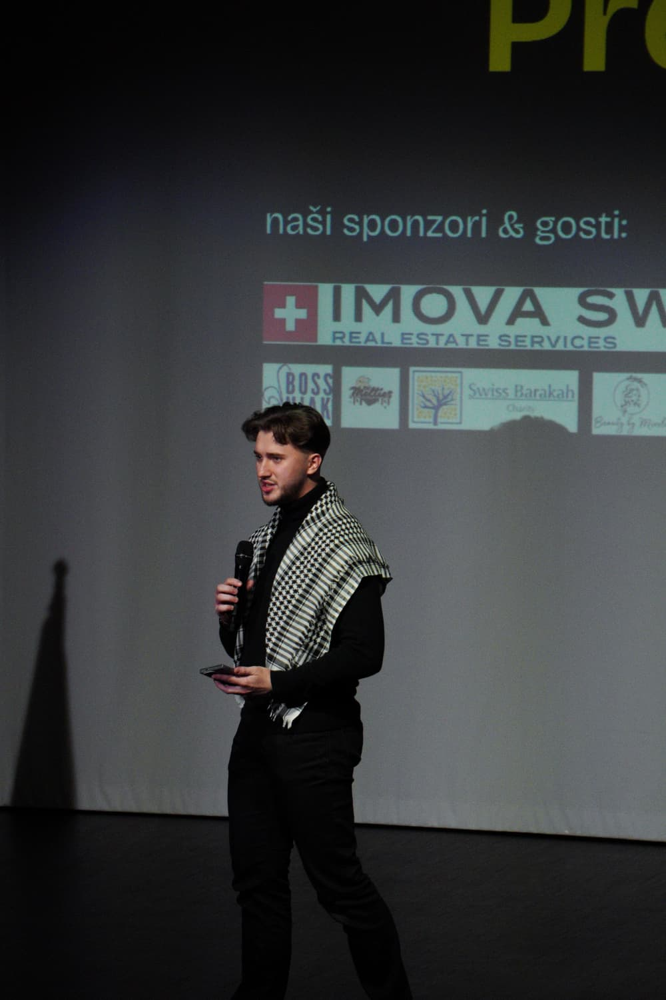

Mein beruflicher Weg begann in der Elektrotechnik. Nach meiner Lehre als Automatiker EFZ sammelte ich mehrere Jahre Erfahrung als Betriebselektriker, als technischer Mitarbeiter im Bereich Elektrobau und zuletzt als Techniker für Systemintegration. Technisches Denken, strukturiertes Arbeiten und lösungsorientiertes Handeln bildeten dabei mein Fundament.
Während der Lehre ist mir die Automation am meisten ans Herz gewachsen, vor allem die SPS-Programmierung. Im Lockdown während der Corona-Pandemie habe ich mir dann selbst Python beigebracht. Das hat mir so viel Spass gemacht, dass ich nach der Lehre darauf zusätzlich aufbauen wollte. So entstand der Wunsch nach einem beruflichen Wandel in die Informatik.
Heute befinde ich mich mitten in diesem Wandel. Ich studiere Informatik mit dem Fokus auf Softwareentwicklung und baue mir damit ein neues Fundament in der IT-Branche auf.
Neben dem Studium engagiere ich mich seit Juli 2026 als Vorstandspräsident von Mreža Mladih Švicarska, einem Jugendnetzwerk der bosnischen Diaspora in der Schweiz. Dort leite ich den Vorstand und übernehme Verantwortung für die Weiterentwicklung des Vereins.
Langfristig möchte ich mich in der Softwareentwicklung etablieren, sei es als Backend-Entwickler oder als SPS-Entwickler.
